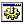

Creates an ActiveX control on the form.
|  | TAObj |
Properties
| AXName | ActiveX component name. Just for information. |
| AXObject | Property is show browser for select component. |
| Left, Top | Position of control relative to it's parent. |
| Width, Height | Size of control in pixels. |
| Name | Unique name of control, this define name of variable, where control ID will kept. In order to work, name for this control should not be empty. If this empty, Koda will generate name anyway. |
| TabOrder | This property define in wich orders controls will be created. This is meaningful when you want switch between controls with Tab key. You also can use visual TabOrder editor. Tab order is start from 0. |
| Visible | This is True by default. Set it to False to generate hidden control. This will add GUICtrlSetState(-1, $GUI_HIDE) line. |
Remarks
None.